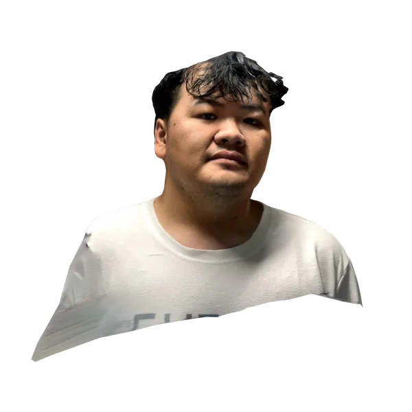

เครดิตภาพและแหล่งที่มา
ภาพถ่ายจริงจาก Pexels ใช้ตามใบอนุญาตของแต่ละภาพ ภาพสถานที่และอุปกรณ์เป็นภาพสต็อก ไม่ใช่คลินิก พันธมิตร อุปกรณ์ของเรา หรือผลการรักษา ส่วนแผนผังและหน้าจอตัวอย่างเป็นองค์ประกอบที่วาดขึ้นเพื่ออธิบายการใช้งาน วิดีโอบนหน้าแรกเป็นวิดีโอสต็อกจาก Pexels
ภาพจากเจ้าของเว็บไซต์
5 ภาพ
ภาพทีม Faceliora จากเพจทางการ ใช้ตามคำอนุญาตของเจ้าของเว็บไซต์ ภาพกิจกรรมเป็นภาพที่เจ้าของเว็บไซต์ส่งให้
| ภาพ | รายละเอียด | ผู้สร้าง / ที่มา | การใช้งาน | ใช้ในหน้า |
|---|---|---|---|---|
 | ภาพประกาศที่เจ้าของเว็บไซต์ส่งให้ | เจ้าของเว็บไซต์ / ทีม Faceliora | ใช้ตามคำอนุญาตของเจ้าของเว็บไซต์ | |
 | บรรยากาศกิจกรรม ELP Season 4 | เจ้าของเว็บไซต์ / ทีม Faceliora | ใช้ตามคำอนุญาตของเจ้าของเว็บไซต์ | |
 | ภาพกิจกรรม Experiential Learning Program Season 4 ที่เจ้าของเว็บไซต์ส่งให้ | เจ้าของเว็บไซต์ / ทีม Faceliora | ใช้ตามคำอนุญาตของเจ้าของเว็บไซต์ | |
 | ภาพกิจกรรม P1 New Regional Startup 2026 ที่เจ้าของเว็บไซต์ส่งให้ | เจ้าของเว็บไซต์ / ทีม Faceliora | ใช้ตามคำอนุญาตของเจ้าของเว็บไซต์ | |
 | ภาพทีม Faceliora ที่ Zebra Camp & Pitch Internationalที่มา: Facebook ของทีมชื่อบนจอในภาพเป็นชื่อเดิมก่อนรีแบรนด์ | ที่มา: Facebook ของทีม | ใช้ตามคำอนุญาตของเจ้าของเว็บไซต์ |
ภาพถ่ายสต็อกจาก Pexels
34 ภาพ
ภาพถ่ายจริงจาก Pexels ใช้ตามใบอนุญาตของแต่ละภาพ ภาพสถานที่และอุปกรณ์เป็นภาพสต็อก ไม่ใช่คลินิก พันธมิตร อุปกรณ์ของเรา หรือผลการรักษา


แผนภาพและแผนภูมิ
16 ภาพ
แผนผังและหน้าจอตัวอย่างเป็นองค์ประกอบที่วาดขึ้นเพื่ออธิบายการใช้งาน แผนภูมิอ้างอิงงานวิจัยที่ระบุในบทความ
| ภาพ | รายละเอียด | ผู้สร้าง / ที่มา | การใช้งาน | ใช้ในหน้า |
|---|---|---|---|---|
 | สามขั้นของการปรึกษา: ตั้งคำถาม แยกภาพจริงกับภาพจำลอง และคุยกับแพทย์ | วาดขึ้นสำหรับเว็บไซต์ | - | |
 | รายการบันทึกเดโมซอฟต์แวร์ แยกสิ่งที่เห็น สิ่งที่ลอง สิ่งที่ยืนยัน และคำถามที่เหลือ | วาดขึ้นสำหรับเว็บไซต์ | - | |
 | ลำดับงานจากแอปสร้างโมเดลภายนอก ผ่านการตรวจความเข้ากันได้ นำเข้า Faceliora Clinic และใช้ประกอบการปรึกษา | วาดขึ้นสำหรับเว็บไซต์ | - | |
 | แผนภาพเส้นทางข้อมูลใบหน้าจากการเก็บ ใช้งาน ส่งต่อ และเก็บรักษาหรือลบ | วาดขึ้นสำหรับเว็บไซต์ | - | |
 | แผนภูมิสัดส่วนไขมันที่คงอยู่ตามเวลา บริเวณร่องแก้มวัดด้วย MRI ขมับ และวิธีกรองด้วยแผ่นฝ้าย พร้อมช่วงค่าเฉลี่ยรวม | วาดขึ้นสำหรับเว็บไซต์ | - | |
 | แผนภูมิปริมาตรที่วัดได้ต่อฟิลเลอร์ 1 มิลลิลิตร แยกตามแก้ม ขมับ คาง ปาก และใต้ตา จากงานวิจัยที่อ้างถึง | วาดขึ้นสำหรับเว็บไซต์ | - | |
 | แผนภูมิความกว้างใบหน้าส่วนล่างที่ลดลงที่วันที่ 90 ในงานวิจัยระยะที่ 2 และ 3 เทียบกับยาหลอก | วาดขึ้นสำหรับเว็บไซต์ | - | |
 | สี่ขั้นของการสแกนหน้า 3D ด้วยมือถือ: เตรียมตัว แสง ถ่ายรอบใบหน้า และความยินยอม | วาดขึ้นสำหรับเว็บไซต์ | - | |
 | ภาพประกอบการเตรียมรูปใบหน้า โดยคุมแสง มุมกล้อง และระยะให้ใกล้เคียงกัน | วาดขึ้นสำหรับเว็บไซต์ | - | |
 | หัวข้อคำถามก่อนทำหัตถการ แบ่งเป็นเป้าหมาย ผู้ดูแล ความเสี่ยง การดูแลต่อ และค่าใช้จ่าย | วาดขึ้นสำหรับเว็บไซต์ | - | |
 | เปรียบเทียบภาพ 2D แยกสองมุม (หน้าตรงและด้านข้าง 90 องศา) กับโมเดล 3D | วาดขึ้นสำหรับเว็บไซต์ | - | |
 | แผนภาพสิ่งที่ส่งออกได้: ภาพจากโมเดล 3D วิดีโอ PDF ใบเสนอราคาของคลินิก และบันทึกการรักษา ทุกไฟล์มีลายน้ำภาพจำลอง | วาดขึ้นสำหรับเว็บไซต์ | - | |
 | แผนภาพสามขั้นของการจำลองการฉีด: เลือกฟิลเลอร์ โบทูลินัมท็อกซิน หรือไขมัน กดลงบนสแกน และดูผลที่คงตัวแล้ว | วาดขึ้นสำหรับเว็บไซต์ | - | |
 | แผนภาพการวิเคราะห์ผิวหน้า 3D: แสงปกติ แสงแดง และ UV จำลอง พร้อมรายการปัญหาผิวที่หาบนสแกน | วาดขึ้นสำหรับเว็บไซต์ | - | |
 | แผนภาพ 13 โซนของการจำลองศัลยกรรม ตั้งแต่หน้าผาก คิ้ว ตา จมูก ถึงกรามและใต้คาง พร้อมแถบเลื่อนและเลเยอร์ | วาดขึ้นสำหรับเว็บไซต์ | - | |
 | แผนภาพการจำลองร้อยไหม: ผิวที่หย่อนใต้แนวตึงถูกยกกลับขึ้นถึงแนวนั้นและไม่เกิน พร้อมรายชื่อร้อยไหมแต่ละแบบ | วาดขึ้นสำหรับเว็บไซต์ | - |
โมเดล 3 มิติ
1 ภาพ
โมเดลสแกน 3 มิติ — ใช้ด้วยความยินยอมของเจ้าของใบหน้า สแกนด้วย Qlone
| ภาพ | รายละเอียด | ผู้สร้าง / ที่มา | การใช้งาน | ใช้ในหน้า |
|---|---|---|---|---|
 | ตัวอย่างโมเดลใบหน้า 3 มิติ (โมเดลสแกน) บนหน้าแรก | สแกนด้วยแอป Qlone บน iPhone | ใช้ด้วยความยินยอมของเจ้าของใบหน้า |
ภาพทีม Faceliora จากเพจทางการ ใช้ตามคำอนุญาตของเจ้าของเว็บไซต์ ส่วนภาพสต็อกใช้ตาม Pexels License